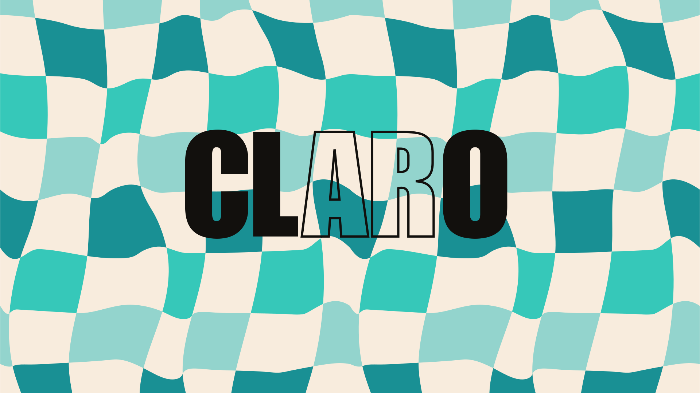

Problema
Todo separado pesa más.
Muchas personas organizan dinero, tareas y planificación diaria con herramientas distintas. Esa fragmentación dificulta saber qué queda disponible y aumenta la sensación de desorden.

UX/UI Case Study · App móvil conceptual · 2026
CLARO es una app móvil conceptual diseñada para ayudar a visualizar dinero disponible y tareas principales desde una experiencia clara, sencilla y calmada.
Problema
Muchas personas organizan dinero, tareas y planificación diaria con herramientas distintas. Esa fragmentación dificulta saber qué queda disponible y aumenta la sensación de desorden.
Solución
CLARO centraliza información esencial: dinero disponible, tareas principales y acciones rápidas. La experiencia prioriza comprensión, jerarquía visual y calma antes que exceso de funcionalidades.
01 · Research
La investigación no apuntaba a crear otra app llena de opciones, sino una forma más simple de ver lo importante. El valor estaba en reducir ruido, no en sumar complejidad.
Los usuarios combinan banco, notas, calendario y apps de tareas para gestionar su día.
Saber cuánto dinero queda realmente disponible no siempre es inmediato ni fácil.
Las interfaces con demasiada información pueden generar rechazo y más carga mental.


02 · Definición
La propuesta se concentró en cinco funciones esenciales: visualizar dinero disponible, registrar gastos, ver resumen mensual, organizar tareas y conectar tiempo + dinero en una misma experiencia.

03 · Wireframes y evolución
Antes de cerrar la interfaz, exploré estructura, jerarquía y flujo en baja fidelidad. El objetivo fue que cada pantalla se entendiera rápido y que la acción principal no quedara escondida.


04 · Sistema visual
El UI Kit se construyó con una estética limpia y mobile-first. Se usaron patrones reconocibles para evitar que la persona tuviera que aprender una lógica nueva.

05 · Prototipo final
El prototipo permite recorrer el flujo principal: iniciar sesión, consultar el estado del dinero, añadir un gasto y recibir feedback inmediato.

06 · Testing e iteración
Todos los usuarios completaron la tarea, pero el test mostró una duda inicial: localizar “Añadir gasto” no era tan evidente como debía. La iteración se centró en reforzar la visibilidad del CTA principal.


07 · Resultado y aprendizajes
CLARO terminó como un prototipo funcional con flujo principal validado, sistema visual consistente y una propuesta centrada en simplicidad, claridad y reducción de carga mental.
Una buena solución no siempre necesita más funciones, sino una jerarquía más clara.
La visibilidad del CTA fue clave para hacer la experiencia más directa y fácil de completar.
El valor del proyecto estuvo en seleccionar qué mostrar, cuándo mostrarlo y cómo reducir ruido.
Siguiente proyecto